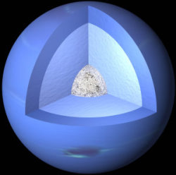

Neptune est la huitième planète en partant du Soleil. Elle orbite à environ 4 milliards de kilomètres et effectue une rotation autour du Soleil en 165 ans. Il s'agit d'une planète géante de glaces.
Neptune est la première planète découverte grâce à des calculs mathématiques.
En effet, cherchant à expliquer les anomalies observées dans le mouvement d'Uranus, le mathématicien Jean Joseph Urbain Le Verrier déduit l'existence de Neptune. Il calcula sa position et sa masse.
Puis il s'adressa à son ami Johann Gottfried Galle qui découvrit la planète à 52'' de la position indiquée par Le Verrier, le 23 septembre 1846.
Cette planète avait déjà été observée en 1795 par Lalande qui l'avait prise pour une étoile. Et surtout, elle avait été observée 234 ans avant sa découverte par Galilée le 28 décembre 1612 alors qu'il observait Jupiter et ses quatre satellites galiléens.
De plus, Le Verrier avait été devancé par un étudiant de Cambridge, John Adams qui avait localisé la planète dès 1843, mais ses travaux n'avaient pas été pris au sérieux.
Voyager 2 fut le seul vaisseau spatial à s'approcher de cette planète (le 25 août 1989). Tout ce que nous savons à l'heure actuelle sur Neptune provient essentiellement de cette rencontre.
Neptune tourne sur elle-même en 16 h 06 min.
La composition de Neptune est probablement similaire à celle d'Uranus: des "glaces" et roches diverses avec 15% d'hydrogène et un peu d'hélium. Tout comme Uranus, mais contrairement à Jupiter et Saturne, elle ne posséderait pas de structure interne; elle serait plutôt plus ou moins uniforme. Elle possède fort probablement un petit noyau (approximativement de la masse de la Terre) de matériel rocheux. Son atmosphère est principalement composée d'hydrogène et d'hélium avec de petites quantités de méthane.
Son atmosphère est composée essentiellement d'hydrogène et d'hélium. Sa couleur bleue est le résultat de l'absorption de la lumière rouge par le méthane de son atmosphère.
Neptune possède 14 satellites dont Triton.
Neptune possède des anneaux. Des observations terrestres ne révélèrent que de faibles arcs à la place d'anneaux complets mais les images de Voyager 2 montrèrent des anneaux complets avec des parties brillantes.
Les anneaux de Neptune sont divisés en 5 anneaux semblables : Galle, Le Verrier, Lassell, Arago et Adams.
STRUCTURE
Neptune possède très probablement un noyau solide de silicates et de fer d'à peu près la masse de la Terre.
Au-dessus de ce noyau, Neptune présenterait une composition assez uniforme (roches en fusion, glaces, 15 % d'hydrogène et un peu d'hélium) et non pas une structure " en couches " comme Jupiter et Saturne.
Enfin, Neptune possède une atmosphère composé d'hydrogène et d'hélium.